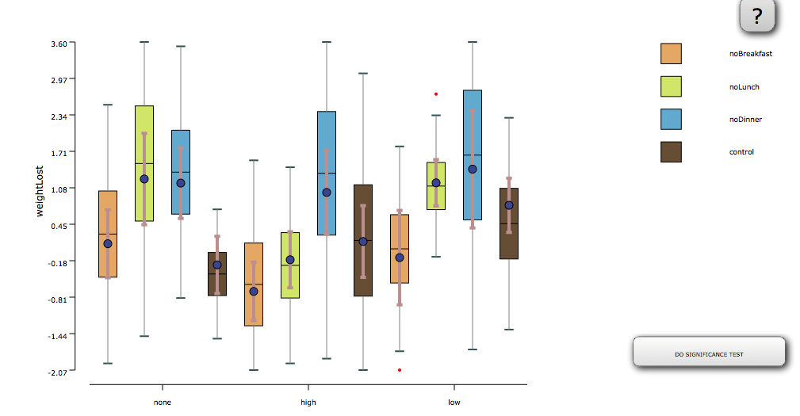
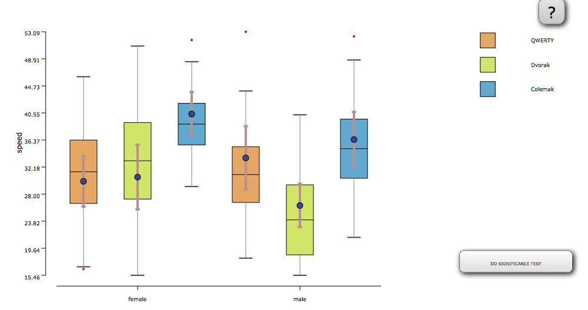

Two-way ANOVA is used when there are 2 independent variables (both must be between-groups factor) and a dependent variable. It is used to see the effect of each independent variable on the dependent variable as well as the interaction between the independent variables.
Conditions:
- Between-subjects experimental design
- The number of Independent Variable are two
- The number of levels in Independent Variable are more than two
- Two independent variables should each consist of two or more categorical, independent groups
- Dependent variable should be measured at the interval or ratio level (i.e., they are continuous)
- Your dependent variable should be approximately normally distributed for each combination of the groups of the two independent variables
- The populations from which the samples were obtained must be normally or approximately normally distributed
- There should be no significant outliers
- There needs to be homogeneity of variances for each combination of the groups of the two independent variables
Examples:
Example 1: In a weight loss user study, weight lost of participants is considered under four different conditions (skip breakfast, skip lunch, skip dinner and control) and excercise is considered at three different levels(none , high , low), which were compared in a between-subjects experimental design. As shown in the graph below, the measured wight lost was normally distributed in each condition, and their variance were about the same.

Example 2: In a text entry user study, three keyboard layouts (QWERTY and DVORAK and Colemak) and two gender levels( male and female) were compared in a between-subjects experimental design. As shown in the graph below, the measured task completion time were normally distributed in each condition, and their variance were radically same.
